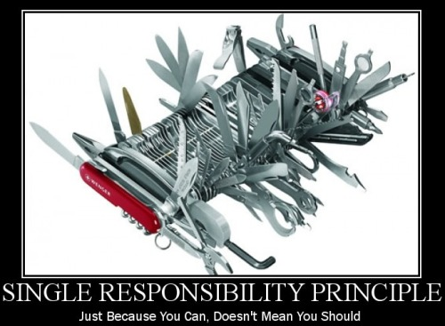
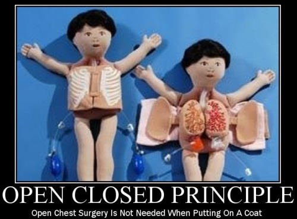
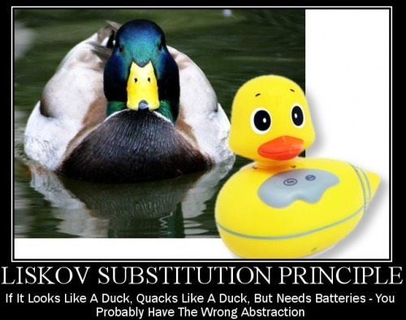
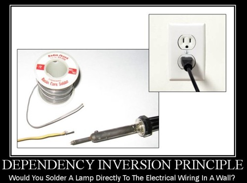

SOLID principles of Object Oriented Design.
- Single Responsibility Principle.
Because each responsibility of a class is an axis of change and if a class has more than one responsibility, the code will become coupled and hard to change. SRP is an idea of breaking things into molecular parts so that it becomes reusable and can be managed centrally.
- Open Closed Principle.
Abstraction is the key of OCP. If you do abstraction well, most likely, it would require no change when the functionality is to be extended. For example, if a client depends on a concrete server, and the server need to be changed, it is highly possible you need to change the client code too. But with OCP design, if client depends on an abstract server, even if you change the concrete server, client code don’t need to be changed.
- Liskov Substitution Principle.
LSP means functions that use references to base classes must be able to use objects of derived classes without knowing it. This is to help designer to enforce is-a relationship when using inheritance.
- Interface Segregation Principle.
Interfaces should be easy to use, which means client should not be forced to depend on interfaces they don’t use. In addition, client should be able to use your interface intuitively. - Dependency Inversion principle.
High level modules should not depend upon low level modules. Rather, both should depend upon abstractions.
Reference:
How I explained OOD to my wife.